...Vegetables
May/June 1973
A plant is like a self-willed man, out of whom we can obtain all which we desire, if we will only treat him his own way.-GOETHE
For the small farmer, no single crop, area for area, will yield as much as the vegetable garden. When James Norman Hall was living in Tahiti, there was a shortage of familiar fruits and vegetables, and what few there were, were motley. The papayas and mangoes tasted great, but occasionally he longed for a good lettuce and tomato sandwich. Or so the story goes. He had a friend of his send him a large package of assorted superseeds to plant. Hall was busy with his writing, however; his garden suffered from neglect, and eventually expired from total insect devastation. He gave the remaining seeds to some Chinese friends, thinking that perhaps they could at least salvage a few vegetables for their family. Five months later, after carefully tending their new garden, his friends returned a huge basket of vegetables to him. Two years later he was still getting a basket a week-nd the industrious farmers were supplying almost all the fresh vegetables to the town of Papeete. And that's more or less the story of any vegetable patch. Good seed and good care give superabundance.
How big you want your garden to be depends not only on how much vegetables are part of your diet, but which ones as well. The yield of tomatoes, say, is much greater than that for sweet corn occupying the same amount of ground. A one-hundred-by-one-hundred-foot garden should yield an ample supply for four plus guests. To help you plan your garden, the approximate yield per hundred-foot row is given for each vegetable in this chapter.
LOCATION
If you keep chickens, the likeliest spot for your vegetable garden is someplace where you can fence off half the area for a chicken yard and plant on the other half. The next year, rotate so that what was the chicken yard becomes the vegetable garden, and vice versa. The double yard makes for healthier chickens and gives you prefertilized soil to work with as well.
The garden should be on well-drained soil, preferably a gentle slope to the south if you have one. Sloping assures drainage, and southern hills warm up the best during cool springs and autumns, giving the plants on them extra growing strength. The difference between flat land and a sunny southern slope can mean as much as a two-months-longer growing season. But don't forget to follow the contour of the hill with your rows, erosion will eventually wipe out the benefits of the site. Also, the tallest plants should be located at the northern end of the garden. A couple of rows of high sweet corn along the south side, for instance, could shade a large portion of your garden for most of the day. Your vegetables will want sun, every bit of it they can get, so if you can't give them a slope exposed to the south, make sure the garden is at at least away from tall trees and in the open.
SOIL TESTING
Your field and forage crops will thrive without your knowing the soil too intimately. You'll know if it's acidic and needs lime; you'll fertilize the fields with animal and green manure. But since there you're working with large areas and less than absolute precision, if a couple of square feet in a field don't yield as heavily as the rest, your overall harvest won't be affected much. In the vegetable garden, however, if a hundred-foot row of potatoes doesn't grow because you've limed the soil, that's the end of your entire crop. Test the soil before you stake out and plant your vegetable garden, particularly those first few years when you're building up the soil and learning how things grow.
Most state agricultural colleges or experiment stations have facilities for running soil tests on your samples. But if you not close to one or the other, the processing could take time and be a bit on the expensive side. If you're in a rush to get started, a soil-testing kit is a great time-saver. With it you can check things out right on the spot.
A simple pH kit is inexpensive and easy to use. You just moisten the innocent-looking paper against the soil. The paper changes color. Match that color with the chart, and presto, you get a pH number.
The larger, more expensive soil kits will give you, besides a pH rating and without much more work, a nitrogen-phosphoruspotassium breakdown. You put some soil into a test tube, add reagents, and match against another chart.
Remember when taking soil samples to use a clean shovel. If you use one: that's been sitting in the manure pile all morning, you won't believe how rich your soil tests out-that is, you'd better not believe it. Also get samples from different parts of your garden, since soil conditions will vary. This doesn't mean you have to test each square yard and then supply the specific ingredients it lacks. Sample selectively the whole area you plan to cultivate, mix all the samples together thoroughly, and then test the mix. It will give you a good idea of what's needed overall.
FERTILIZER
The richness of your vegetable plot will depend on five factors, namely, nitrogen, phosphorus, potassium, organic matter, and trace elements. The basic fertilizer source for the garden will be the compost pile.
A good dose of compost, say two inches or more if you have enough to go around, should be dug into the garden two or three weeks before planting, while you're still tilling the soil and have committed yourself to what you're going to grow by leafing through all those glorious sped catalogs and finally cutting down the list of vegetables you'd like to manageable proportions before sending away for the seeds.
NITROGEN, PHOSPHORUS & POTASSIUM: WHAT THEY DO
Nitrogen: A basic building block of protein. Produces good stem and leaf development. Makes plants succulent and green.
Phosphorus: Stimulates root development in young plants. Increases the proportion of fruit to plant. Speeds maturity of crops, also increases plants' resistance to some diseases.
Potassium: Essential in the formation of starches, sugar and cellulose. Without it plants do not mature well. Also aids in disease resistance, particularly those diseases caused by fungi.
If your soil test indicated a lack of nitrogen, phosphorus or potassium, the deficiency can be remedied easily by adding material rich in the needed element to the soil. Apply it along with the compost before planting. If your soil is very low in one element, concoct a compost heap that will compensate for it. Low in nitrogen? Add extra animal manure, tankage, blood meal, fish scraps, and so forth. Phosphorus-deprived? Acid phosphate rock, bone meal, tankage, incinerator ash. Low in potassium'? Throw in some seaweed (wash the salt off if you gathered your own, otherwise it will build up in the soil), green sand, wood ash, or cocoa shell.
Once you've given your garden plot its initial composting planted all those rows of good seeds and watched how they grow, more fertilizer may be added for the mature plants. Take well-composted material and spread it along the sides of the rows, being careful not to cover the growing plant stems. If you raise the soil level around the stem of a plant by stacking up compost against it, you may induce stem rot. Besides, the fine roots of the plant, the ones that absorb most of the nutrients from the soil are some distance away from the main stem. This side dressing of ompost between the rows will slowly filter down into the soil, providing continuous nourishment for those hungry little roots. At the same time it acts as a mulch, keeping down weeds and retaining moisture in the soil.
SEEDING
Many vegetables are given a head start by by indoor planting.
For those that take more than ninety days to reach maturity or bearing age, the early start is almost a necessity in the northern half of the country if you expect to got much of a harvest. Plant the seeds in pots or wooden flats, or trays. If you use flats (preferred because they lend themselves to row planting), don't make them too long. You're going to be lugging them in and out of doors later.
Since the mature plants are going to have to adjust to life in the cold, cruel world outside, soil for the seedlings should not be superrich. Spread the bottom fourth of the flat with sphagnum moss or pure humus. Fill the rest of the flat with good-quality but not overly rich soil, leaving enough room to cover the seeds with an adequately thick layer. Sow the seeds thinly in rows, and over them spread compost to the proper depth for that type of seed. To give your seeds an easy start, use sifted compost as a cover. That is, take your best-quality compost and rub it through mosquito screening. Spray water gently over the top of the soil to help the seeds settle in.
Keep the beds moist by covering with glass or plastic, but lift the cover at least twice a day to circulate air. Water the trays by dunking the bottoms in water for a few minutes rather than watering from the top. This will aid root development while keeping the plants from damping off. Damping off is caused by a fungus disease that thrives when the surface soil around a young plant stern is damp. The fungus attacks the young, tender stem. The plant keels over and dies. So don't overwater. If any fungus develops on the soil, scrape it away immediately and leave the cover off. You'll be taking the cover off anyway when the first shoots break the surface of the soil. Don't let the plants crowd. If several have come up in one spot, pull out the weakest ones. Keep the flats indoors in a warm, sunny spot.
When the first two regular leaves, as opposed to the seed leaves, have developed, the seedlings should be spaced out, two inches apart, in two-inch rows. Dig them up with a soil bundle around the roots, plant them in a new flat filled with ordinary soil that is friable, but not too rich. If the soil seems to pack tightly, mix in some sharp sand or vermiculite.
Somewhat poor soil at this stage of the game will make the roots shoot around looking for better stuff. This gives your plants a solid foundation for future growth.
The new flats are still kept indoors in a sunny spot with night temperatures not above 60° F. However, as soon as the days begin to warm up, take them out to the yard daily, and bring them in again at night. This will acclimatize them to conditions outside. After a week of exercising yourself by carrying the flats back and forth, the plants are ready to be transplanted to the garden. Wait till after the last killing frost in your region, of course.
A cold frame can be used to house the flats outdoors instead of lugging them around. The principle of the cold frame is that it blocks off chilling winds, at the same time permitting the radiant heat of the sun to penetrate, keeping the plants all warm and cozy. The cold frame is opened during the warmest part of the day to prevent steamed vegetables and allow the circulation of fresh air. The degree to which it is opened depends on the day's temperature. Your objective is to keep the inside temperature in the 60° to 70°F. range. A thermometer will give you an indication of how much to open the frame. Close it early in the afternoon so enough heat is retained to keep the plants cozy at night. If you find night temperatures inside the cold frame falling below 40°F., you should move the seedlings indoors.
When growing seedlings in flats, indoors or in a cold frame, a week before they are to be set out in the garden take a sharp knife and cut the soil to the bottom of the flats so that each plant has its own individual cube of earth. This will cut any overlapping roots. At the same time, the plants will have a week to recover from the surgery and develop new hair roots within their own territory, thus lessening transplant shock. Individual peat starter pots save a lot of work and trouble, and with mass production their costs are declining to the point where they might be worth considering.
Transplant from flats to the garden when all danger of frost is past and the plants have developed numerous healthy leaves. For an extra head start, you can set out some plants before the frost-free date, but make sure to mulch them heavily. Late afternoon or evening is the best time to transplant. Water the garden well to insure settling in of the roots. Since young plants should not be exposed to direct sunlight the first two days after being transplanted outside, and since cutworms will try to do to your plants just what their name implies, it's a good idea to put a paper collar around each plant and cover the whole thing lightly with mulch. Don't mulch between the rows of collared plants, however, or the mulch will retain too much of that good dousing of water you gave the garden, and also keep the soil from warming up in the sun.
If you think you're going to have enough to do around the farm without cold-framing and transplanting a whole lot of seedlings, except maybe the tomato and pepper plants, you can still speed up getting the vegetable patch going. Cloche gardening -covering crops in the fields with portable glass or plastic greenhouses-makes direct planting in the garden possible earlier. This type of temporary greenhouse has given excellent results in extending the growing season in the more northern latitudes, such as New England.
The cloche protects seeds and plants from frost. At the same time, moisture is retained, and rain running off the top and sides enters the ground away from the plants, assuring that the soil directly around them does not cake or pack, even without hoeing.
A modern version of the cloche can be made by inverting U-shaped frames at one-foot intervals over the rows to be seeded. Coat hangers or willow branches work well. The maximum width you'll want at the base is twenty inches. After seeding, the upside-down U's are covered with polyethylene. Each end of the tunnel is folded over to retain heat and moisture. Open the tunnel around eleven in the morning for ventilation and close at three or four o'clock for the evening. But be sure to keep the tunnel closed during windy days or it will take off.
There's still, of course, the old tried and true method of planting a vegetable garden. As soon as the frost season is past, you sow the seeds in the garden, cover them up to the appropriate depth, using sifted compost if possible, and stand back. Except for weeding, weeding, and weeding.
But do you have to weed? Not any more. A well-kept garden on healthy soil is easy to care for if you use mulch.
MULCHING
By spreading a layer of organic material on the soil around your crops you can assure that the soil retains its moisture, and most weeds are eliminated because when they germinate and come up in the darkness beneath the mulch they wither away. Meanwhile, this mulch slowly decays, adding more natural organic material to the soil.
You can mulch along or between the rows of seedlings you set out from flats at once, but, except for mulch on top of a cutworm collar, it's better to wait a couple of days, since you've watered the plants heavily to insure root setting and you don't want the mulch to retain a lot of excess water. When you do mulch the young plants, leave an unmulched circle about six inches in diameter around each one for the first two weeks. After that you can bring the mulch almost up to the stems.
When sowing seeds directly in the garden, mulch between all the rows, but not right on top of where the young plants will come up. Wait till the plants are well formed, then weed around them if necessary, and mulch again. Mulch whenever the old material has decayed and compacted enough to permit weeds to sprout. You never have to weed an established garden. When you see some unwanted plants, just cover them with mulch. Not only will they die from lack of light, but they will contribute to the soil as they decay.
Mulch can vary from an inch to a foot in thickness. The basic rule of thumb is, the finer the material, the thinner the layer. When mulching with something like hay, you approach the one-foot level-after your plants are considerably taller than that, of course. Finer mulch, such as ground corncobs, peanut or cocoa hulls, or sawdust, need only be an inch or two. One last word: The soil must be able to breathe through the mulch. For this reason, you can't use materials, such as leaves, that will bind together into flat cakey layers with no air penetration. At least don't use them directly above the plant roots; between the rows is all right if you absolutely have to. But then, you shouldn't have to, since they'd be better off in your compost pile.
So much for cultivating your garden. Just stand back and wait for the harvest. It will be the better for the mulch. Cucumbers, melons, and other ground-lying crops, for instance, won't become soft and rot, because they're resting on loose, dry mulch, not the ground. As for the harvesting, well, you'll know a country-fresh sun-ripened tomato or pepper when you see a real one, and a sweet ear of corn or pod of tiny new peas once you've tasted your first.
WHAT TO PLANT, AND WHEN AND HOW
You'll have no trouble making a grocery list for your garden. But the varieties to choose from for each vegetable often make almost as long a list. Those recommended here are good basic ones for the beginner. There might, however, be varieties better for your specifc region. What are your neighbors growing? Try those, but don't forget to experiment a little too. You may find a couple of your favorites missing from the list that follows. Well, some of us never could stand Brussels sprouts ....
Planting periods for specific vegetables (given under the heading "Time to plant" in the charts that follow) vary greatly with the region you're in. The things to remember are: the average last killing frost is just that, the average date of the last killing frost in your region; the frost-free date is the date after which there will be too frost at all (not all frosts are severe enough to kill the plants), and this is usually two to three weeks after the average date of the last killing frost. So much for the frosts. "Early spring" refers to the week or two after the average last killing frost. "Very early spring" means you can begin planting even before all danger of frost is past.
Incidentally, I'm all for overproduction rather than under. In fact, continuous production is to your benefit. Sow seeds of any given vegetables once a week over the duration of their planting period. This will turn your garden into a movable salad bowl. And nothing goes to waste on a farm. Extra vegetables can always be frozen, canned, pickled, salted and stored in the root cellar for a winter supply or fed to the livestock. Even if they spoil, they're returned to the soil by way of the compost pile. Besides, if you find that five of your tomato plants are yielding all you can eat and you've got twenty, you can always take the extra tomatoes with you to town the next time you go and sell them to the greengrocer. You won't make a mint, but it'll pay for the gas. Or put up a roadside stand if you're well located for one. And of course you'll have friends dropping by who will be more than helpful in removing your excess yield.
Asparagus takes more work initially than most garden vegetables. On the other hand, you'll be rewarded for your labors with a crop bearing for at least ten years, and in some cases up to fifteen or twenty years.
Remember to place your asparagus bed in a part of the garden that will remain untouched in the future, because it's going to be there awhile. Usually asparagus is planted at the edge of the garden, sometimes even completely separate from it in a corner of the yard-but not where it will be shaded by trees, and not where the chickens will be ranging every other year.
A deep, loamy, fertile soil that is well drained suits the plant best. The last requirement is the most important; asparagus will grow in almost any soil as long as it is well drained.
First thing, as soon as the ground can be worked in spring, decide how long you are going to make the bed. Two fifty-foot beds will yield as much as one a hundred feet long. Drive in a stake at either end of what will be the bed and draw a string between them.
Now comes the work. Dig a trench twelve inches deep by twelve inches wide the whole length of the bed. Over the bottom of each hundred feet of trench spread twenty pounds of ground limestone and fifteen pounds of phosphate rock. Moisten and dig into the bottom of the trench. Cover with a four-inch layer of quality compost. Some well-rotted manure, four months or older, may also be added. Work it all into the bottom again.
Lay your asparagus roots at eighteen-inch intervals along the trench; they should be about ten inches from the top. It's a good idea to buy 50 percent more rootstock than you intend to plant and dispose of the small weak ones. Cover with two inches of fine sifted compost. Water well and wait two or three weeks. Add another inch of compost and soil to the trench every two weeks until the trench is filled. This is only an approximate schedule. The object of the game is to let the tips keep growing a little higher than the soil level at all times.
By the time the first freeze of the fall approaches, the trench should have been filled. However, additional winter protection is needed. Mulch with compost, hay, well-rotted manure, or whatever is handy. So much for the first year's work.
Come spring, you rake off the mulch and leave it between the rows, or on the sides if you only have one row. Loosen the soil in the pit gently to a depth of six inches. No more, or you might injure the rootstock. Now make a hill of compost about one inch high over the length of the pit. As the warm spring weather continues, shoots will develop. Let them reach a height of six to eight inches; then, digging around them gently, harvest them by cutting off two inches below the soil. They must be picked daily or they go to seed. The first year's harvest shouldn't be extended for more than two weeks. The second year, cutting may be extended to a total of six weeks. This is the optimum length of time for the following years' harvest as well.
After your harvesting is done, shoots will keep coming up. Let these develop into lacy asparagus bushes, essential to the strength of your bed. Leave the bushes as part of the winter mulch.
Mary Washington is resistant to asparagus rust. Still the beds should never be located in areas of frequent dampness, heavy dews, or mists, because these encourage the formation of rust.
Once the plants begin to develop, say, when they're six inches tall, apply manure as side dressing. That is, place manure on either side of the plant, but no closer than two inch since it can be burned by direct contact. This is particularly true of chicken manure; use it only for digging into the oil in the fall for next year's planting.
Snap beans used to be called string beans and still are in most places, But they shouldn't be, since the Department Agriculture decided the old name made poor public relations and snap beans was a snappier image. They still taste great, whatever you call them, fresh off the vine, picked just before maturity. The plant forms a bush about eighteen inches high.
Sow the seeds directly into the garden. Cultivate very shallowly for weeds. Better yet, mulch away the weeds. The play grow in almost any soil as long as it is not too acid. However, beans do best on rich soils, so compost well.
The beet is a native of North Africa, particularly around Egypt, from where the variety with that name came. Beets will thrive on just about any soil as long as it's not acid. They attract few pests and are in general very easy to grow. Since they have deep roots, loose, friable loam will give best results. If your soil tends to cake, incorporate plenty of organic matter. Don't use fresh manure. Well-rotted manure is fine.
When the tops reach the six-inch stage, beets often have to be thinned. This is because the "seed" is not an actual seed, but a fruit containing several seeds. The pulled beets can be transplanted. But why bother? You'll no doubt have enough without them. Instead, use the tender pulled beets whole and raw in a good country salad. Although it's fun to grow superbeets, for the tastiest eating pull the baby ones when they are less than an inch and a half in diameter.
Beet greens are an excellent source of vitamins A and C and iron. So learn to think of them as a salad crop as well as a root crop.
This plant belongs to the Brassica , one of the most diversified vegetable groups. Included in the clan are cabbage, Brussels sprouts, kohlrabi, and kale. It is highly nutritious and easy to grow. Start a spring crop in flats and transplant after the last frost. For a fall crop, plant directly in the garden in late May. Soil should be deeply dug. Drainage is more important than soil quality.
A broccoli plant will be about two feet tall when ready for cutting. Watch carefully that the buds do not open before you harvest. Cut off only the main head. The little buds on the remaining stem will now head out. You can get six to eight cuttings off one stem.
The plant is not prone to disease, but it does attract cabbage worms. Crop rotation is a vital preventative. Always grow the whole Brassica group in rotation, so no member of the family grows on soil where another has been cultivated in the past two years.
One of the most popular of the garden vegetables, and rightly so. You'll want to grow a fair amount because of its good storage qualities and to make sauerkraut. Soil moisture is important, so mulch well. As to the soil itself, cabbage isn't fussy, but it needs cool, humid weather for the best heading. Hence the late-maturing fall plants are preferred. Fall plants also make bigger cabbage heads.
Sow both early and late varieties in flats first and transplant as four-inch seedlings, or about six weeks after indoor planting. Liming will help keep down some pests, such as clubroot. Others-for instance, the cabbage worm, cabbage looper, and harlequin bug-should be picked off by hand when spotted.
A crop of increasing and well-deserved popularity. Stores well in the root cellar for up to two months. Needs cool weather, otherwise plants will develop a seed stalk instead of the head.
Sow directly into the garden. Thin when three inches tall and use the young pulled greens for salad. Remaining plants will need good evening watering during dry spells. Mulching helps; Chinese cabbage needs richly fertilized, moist soil.
Cantaloupes are actually a variety of hard-rinded muskmelon. Their cultivation parallels that of cucumbers. Plenty of moisture, particularly during fruiting, and rich organic material are the key. In addition, sunny warmth is necessary. Cool temperatures or even continuously cloudy days will decrease yield and quality.
Cantaloupes, and for that matter most melons, are planted in small, raised mounds of earth, or hills. This produces bigger and better plants. You don't have to build a pyramid; a hill four to six inches high and a foot in diameter will do admirably. Mix in some aged manure when building the mounds.
Melons are best when field-ripened and picked just before eating. The way to tell a ripe one from its underripe neighbor is to push gently with the thumb at the joint where vine and melon merge. They should separate after even a light touch when the fruit is really ripe.
The cucumber beetle attacks cantaloupes too. Since you should already have marigolds growing by the cucumber vine (see the chapter on "Pest Control"), you might think it a bright idea to plant your melons there as well. Don't. Keep the two as far apart as possible, and plant a second batch of marigolds near the cantaloupes. Crop concentration just makes for greater temptation for the bugs.
Another easy-to-grow crop, with few insect enemies. Well-drained, organically rich soil should be used. Drop the seeds on top, then cover them with half an inch of finely screened compost. Tamp this down with a board to help eliminate air pockets. Carrot seeds, at 24,000 to an ounce, are very small and need all the help they can get in covering up snugly.
Often carrots and radishes are sown together and the quick-maturing radishes harvested when the carrots are first thinned. Thinning is essential for a good crop. And there's nothing like the delightful earthy carroty smell that surrounds you while you're at this task. You'll find the tiny young carrots make delicious eating. Carrots for winter storage are left in the ground till just after the first frost.
A tricky crop and not worth growing the first year unless you're a cauliflower nut. If you can, settle for broccoli. If not, sow in cold frames, and transplant seedlings after six weeks. Needs soil very high in organic matter, moisture, and nitrogen. Water daily every evening during dry spells.
Keep a sharp lookout for the young flower. When it is three inches in diameter, you have to tie the cabbage leaves over the flower like a Christmas present. Bows are not necessary, but the flower must be totally protected from light. Another method is simply to break the leaves over the flower-of course, one good heavy wind and goodby cauliflower crop. Cauliflower heads develop very rapidly. They'll be ready for cutting five to twelve days after bundling; the warmer the weather the faster the development.
An all-around, handy, easy-to-grow plant not often found whole in the city. Young shoots, frequently sold as endive in city markets, are for munching, the roots for boiling like carrots or turnips. What makes chicory particularly valuable is that it can be forced in winter to produce fresh salad greens. To boot, the dried, roasted roots when ground make a good coffee substitute, and for all your farm's self-sufficiency, you're not going to be able to grow real coffee in a temperate climate. Nor real tea, for that matter.
It is a hardy crop, but likes well-drained, heavily manured soil. Hardly any insect enemies or disease problems.
For winter endive, leave the roots in the ground through the first few frosts. Dig them up and place them upright in a box of soil with about two or three inches of soil between the plants. Cover each crown with loose, moist sand to a depth of seven inches. Store in an area where they will not freeze, but where the temperature does not go much above 40°F. Keep moist with a weekly watering. Two to three weeks before you want to use them for salad, place the box in a room where the temperature is 60° to 65° F. Give the spent rootstock to your animals for a bit of winter variety.
100 clumps (or more than enough for a family of thirty-two)
Another handy plant for the homestead in need of winter greens. Take a couple of the clumps indoors, planted to trays, before freezing weather sets in. They'll give you tasty fresh sprigs for soups all winter.
Chives like a very sunny location and rich, loose, pebbly soil. The second spring, clumps left in the garden over the winter can be dug up and the bulbs at the bottom of each bunch divided so you get two plants. Cutting for salad should be done with gusto, not trepidation, for the more you cut, the better the plant survives.
There are probably five billion varieties by now, but the old Golden Cross Bantam is a good way to settle the confusion.
Yes, the Indians were right, a dead fish in each hill of corn does help. But before you raid your sardine tins, in case you're not near one of the coasts, try instead a good application of well-rotted manure two weeks before planting, or fresh manure the preceding fall.
Corn is hard on the soil, and fertilizer, particularly one rich in nitrogen, should be used liberally. A winter crop of clover is a good idea for this part of the garden. Mulching and side-dressing are worthwhile.
Sweet corn should be harvested in the milk stage-and, of course, the last possible minute before dinner. Break a kernel with your fingernail; if the inside is milky liquid, it's ready. Harvesting early, before the kernels reach the dough stage, is particularly important if there are many crows in your area and you'd still like to eat some of your own corn.
Save a little dent corn from the field crop, if you plant one, for parched corn, a tasty change from popcorn on a winter's evening.
Will not grow in acid soils. Need loose, open soil. Sandy soils are good if organic matter is high. Plowing under animal manure the fall before planting is very helpful.
Unless mulched, cucumbers will need thorough weekly cultivation. Plant six seeds to a hill and thin out the three weakest when the plants are four inches high. Making one-foot-wide, six-inch-deep trenches between cucumber rows and filling them with well-rotted manure covered by an inch of soil and some additional mulch helps assure a good crop in dry weather. Water the trenches daily. The rich seepage will boost plant growth.
Six to seven weeks after planting, small cucumbers will form. Watch them carefully, because they're like balloons being blown up. One day there's a mini-cucumber, the next it's fifteen inches long. Cucumbers are over 96 percent water. That's what fills them up so fast, and that's why the cucumber crop is so moisture-dependent.
Healthy cucumber plants shouldn't be affected seriously by pests or disease. However, the cucumber beetle, which also spreads bacterial wilt, must be kept in check. Plant marigolds around your cucumber plants. Personally, I never did like them, but neither do the cucumber beetles. And I'd rather have flowers than beetles. Wood ashes sprinkled on the soil as fertilizer are an additional deterrent.
Bulbs give better results than seeds, and results they do give. Don't drop any on your way to the garden or you'll have a Hansel and Gretel trail growing all the way back to the house come summer. Break the big bulb into cloves, or sets. These sets, composed of two or three cloves each, are what you then sow. Nitrogen fertilizer is a plus, although if you have good soil, nothing will be needed.
Harvest in midsummer or when the tops ripen, dry, and begin to fall to the ground. Pull up the whole plant. Let dry thoroughly, then braid the grass top parts together to form a long chain. Hang in a dry spot in the kitchen for ready use.
As a perennial, this is another one to plant where it can grow undisturbed for several years. Although horseradish will grow anywhere, to produuce good straight roots it should ha, deep, loose, organic soil, with manure dug down to a foot. The sets that are sown for horseradish are the small roots attached to the main one. Lay these horizontally in a six-inch-dee trench, with the thicker end of the root four inches highs than the thin end - in other words, average depth four inches. , You can leave it in the ground over the winter. In spring, just dig up ins' break off fresh set,, dig up and break off fresh sets and plant them. Tastiest in .
If you're used to eating iceberg, consider switching. The loose-headed lettuces such as romane and those in the butter group are much easier to grow, and, besides, their green leaves are more nutritious than their blanched white sour parts. Like most garden vegetables, lettuce prefers well-drained, rich soil, and, like cucumbers, it needs plenty of water during the growing season. In fact the two keys to a good lettuce crop are plenty of water and plenty of growing space.
Thin ruthlessly, for if the lettuce doesn't have the room to grow quickly, it won't grow at all. Thinned plants when in the four-leaf stage are reasily transplantable to another row, so there's no waste involved. This transplantability makes the crop ideal for starting in flats before you can work the garden. But remember, lettuce prefers its weather orbit on the cool side; flats, indoors or out, should be kept at between 50° and 60° F.
Leaf lettuce will refill your salad bowl with fresh-pie greens many times over if you you harvest only the lower leaves. The center ones will grow and grow. But pinch the top off the center ones will grow and grow. But pinch the top off the center to keep it from flowering.
An easy-to-grow crop if, not to sound repetitious, your soil is fertile and well drained. Can be sown from either seeds or sets. Sets are a no-muss, no-fuss method, since you don't have to start them indoors or in cold frames. Even if you have the space, it's usually better to start tomatoes, peppers, lettuce, and the like indoors or in the frames, taking the risk of sowing onion seeds directly into the ground, even before the last frost. If using sets, they should be no bigger than half an inch in diameter. Although logic might dictate the bigger the better, large ones are more apt to put out seed stalks, making the onion thick-necked.
Set onions are not as good for storage as seed onions, and young onions shipped up from the South for planting are the best of all for later storage. The reason young plants are often bought from the South can be traced to the light-sensitivity of the onion. While the plant will grow well enough with less than ten hours of sunlight, most varieties of onion won't form the onion bulb unless the plant gets twelve to fourteen hours of daylight. You need the onion bulb, the plant doesn't. It can always propagate through seeds. To get onions, it's essential that your plants be in the bulb-forming stage by early summer.
At maturity, when about three-fourths of the leaves have dropped to the ground, give them a helping hand and knock down the remaining ones with the backside of a rake. Two days later, pull the onions to the surface and leave them there to sun-dry for a couple of days. This will help cure as well as dry them. Now clip off the old tops to within an inch of the bulb. Place the onions in a single layer on open slatted racks indoors or outdoors under a rain cover of some sort-a porch or even just a sheet of tin will do. They need continuous air circulation around them. When the weather stays cool all day long, bag the onions in netting and hang them in a cool, dry cellar.
Plant some of both varieties of parsley, that grown for its top as well as that, like the Hamburg, whose carrot-shaped root is a great ingredient in soups and real stews. Both varieties will survive the winter in the garden, even in most northern area if well mulched.
Parsley seeds germinate unenthusiastically, and it's suggested they be soaked in tepid water for twenty-four hours before planting to assist the process. Even so, they will take a month to germinate. Parsley likes a lot of nitrogen. Apply some corn: post rich in that element as side dressing to the plants as they grow.
Trim leaf parsley for your table from around the outside of the plant, leaving the center leaves to mature further. Root parsley is harvested in fall. It stores well in your cold cellar.
A good crop for the North. Parsnip roots may be left in the ground through the whole winter and harvested as needed.
Freezing improves flavor. Soak seeds like parsley; plant in well-drained, light, loosesoil that has been richly composted. The parsnip root goe down a foot and a half, so make sure the ground is loose t, that depth. Mulch over the planting to keep it cool and moist until the first shoots break ground, then clear enough space for them to reach the sky.
Cool weather is a must for peas. This is why early spring planting is essential. Mulching the young plants throughout the spring helps keep the soil cooler and gives good growth.
Peas belong to the legume family and make a good rotation crop for your sweet corn, which is convenient since both crops do best when not planted to follow themselves in the same spot. For your peas, manure in the preceding fall if you can.
To give peas a head start in the garden, soak the seeds in water, half covered, until they sprout. It will take them a few days, but when they do sprout, they grow quickly, so plant immediately. Fertilize the plants well when they are one and a half inches tall.
Be sure to grow some edible pod varieties, the kind you usually get in the city only in Chinese restaurants as snow peas. Harvest them just as the seeds begin to form. Delicious served whole and raw in salads, or barely cooked.
Need well-drained soil, but not too much nitrogen. Nitrogen makes the plant grow well, so well, in fact, it forgets all about making peppers.
Grow peppers at the far end of the garden from the potatoes, since potato bugs like peppers for a change in menu. When starting peppers in flats, keep the soil very moist until the seed germinates. However, once the young shoots develop, be a little more sparing. They need the moisture but are also prone to damping off. Make sure there's no chance of frost before setting them out in your garden. Mulching is an excellent way to retain ground moisture. But, as with tomatoes, wait till after the first month's growth to mulch, or the ground will also retain the cold, which makes the plants fruit later.
Harvest the fruit by cutting the stem one inch above it. Do not twist loose. Sweet peppers are usually picked green for shipping. On the farm, picking them when fully ripe and reddish adds flavor. Hot varieties such as cayenne and tabasco must be picked red.
Sandy loam not too rich in organic matter is preferred. A good poor-soil crop. Use plants instead of seed potatoes because unless you're guaranteed the potatoes haven't been sprayed with a growth inhibitor, you're not going to get anywhere with them. Also the plants will be more disease-resistant.
They like dry, hot weather. Don't mulch, but cultivate until the vines get big enough to shade out weeds. Harvest before the first frost of fall. Dig the potatoes up carefully. Bruising them will reduce their storage quality.
Sweet potatoes must be cured before storing. But curing is simple enough if you're in the South. just spread them out on some dry hay on the ground and let them lie in the sun for the better part of a week. Turn them at least once. In cooler climes, keep them in a 90 percent humidity environment at 80° to 90° F. for ten days. Store them packed lightly in straw, at temperatures not below 50° F., with good ventilation.
Potatoes need acid soil, as opposed to most vegetables, which like things close to neutral. Don't put them in limed soil, soil that has been manured within a year, or c on which tomatoes have been grown for the past two years. Early varieties that get a cool growing start are less disease-prone. Potash is important, so use compost rich in it. Let cut seed potatoes dry for twenty-four hours before planting. Make sure each piece contains at least one eye for a sprout. Mulch potatoes with hay to one foot after planting; this will keep the soil cool for healthier growth.
Potato Plant
1.Flower (Berry poisonous)
2. Leaf
3. Terminal Leaflet
4. Stem
5. Underground Stem
6. Incipient Tuber
7. Old Potato (Seed)
8. Eyebrow
9. Eye
10. Young, Tuber
11. True Roots
Potatoes are ready for harvesting when the tops have mostly withered. Leave storage potatoes a little longer. Of course don't forget to harvest small new potatoes early; there's nothing like them. Cure storage potatoes like sweet potatoes. M.,. certain they are dry before putting them away in a cool, dark place for the winter.
Pumpkins are often sown in rows between corn plants, as a double crop. The corn matures first and is harvested, leaving the field to the pumpkins.
Sandy loam is the preferred soil, although, again, this crop will grow in any well-drained, fertile soil that does not pack tightly. Usually planted six to a hill, with the weakest three or four seedlings being pulled as the plants begin to vine. It's a good idea to cover the hill and seedlings with a wooden or metal frame hung with cheesecloth to keep striped beetles away from the young, tender plants. The veil is removed, of course, once the young plants begin to outgrow it.
If the vines seem to grow on endlessly with no flowers in sight, pinch back the tips of the vines. They'll take the hint. In the cool weather of fall, before the frost is on the pumpkin, cut the fruit from the vine, leaving several inches of stem. Let them field-cure for ten davs and they're ready to be stored in your cellar till the big pumpkin-pie bake.
Radishes will likely be your first crop, simply because you can sow them early and they'll go from seed to picking in just about a month. The red ones are faster-maturing than the white, but the white are larger and more flavorsome. Loose organic soil will give you better, bigger roots. Don't plant spring varieties in the summer; they will yield poorly go to seed. Other than that, the crop is about as easy to grow as they come, and the only care it needs is occasional thinning, which is accomplished by harvesting. Sow some more radish every week for a continuous supply.
A frequently used trick is to mix radish seeds with beets, carrots, or other slow-germinating seeds. The emerging radishes indicate where the other crop will eventually come up , you don't hoe it away if you weed. At the same time, you get a bonus crop without extra ground preparation or seeding pulling the quickmaturing radishes before the others begin their main growth .
Rhubarb us a very healthy crop. particularly in northern countries where its vitamin C can be put to good use in the absence of citrus fruits. It can also be a deadly crop, however. Do not eat rhubarb leaves, nor feed them to your livestock. They contain large quantities of calcium oxalate, which is poisonons. Throw the leaves on your compost pile.
Rhubarb is another crop to plant off by itself where you and the chickens will leave it alone, not only to prevent leaf-nibbling, but because the plants will keep sprouting for years. Initial propagation by rootstock rather than seed is much preferred. Needs heavily fertilized, moist soil. Cool to cold winters suit the plant, although it should, under these circumstances be mulched to a depth of four inches. Livestock bedding makes an excellent mulch, since the plant will use the manure. You can speed up spring growth by putting eighteen-inch-square open-top boxes around the plants so they have to grow tall quickly. Cut off any flowering stems that develop, as they decrease the yield of edible stems.
Six- or seven-year-old plants will have enlarged roots. This is the time to retrench your rhubarb bed. Dig up those plants that have given you the tastiest, most colorful stems. Cut the roots into five to eight sections, making sure that at least one bud remains on each root section. Plant the way you started out.
An excellent storage crop. You'll want to grow enough not only for your own larder, but for your livestock's winter supply as well. Requires deep, moist, fertile soil, and prefers it cool, so it's usually sown as a fall crop.
If you're using rutabaga for stock feed, sow theirs a little earlier to increase the root size. It won't be quite as tasty, but still quite nutritious and satisfactory.
Extra moisture and nitrogen-rich compost during the early stages of growth encourage an abundance of leaves. Keep sowing at two-week intervals even into the fall. Half-grown spinach is mulched heavily - up to a foot, depending on how far north you are. Remove the mulch in spring for early harvest.
For late planting, switch to a yellow disease-resistant variety such as Virginia Savoy. For areas with hot summers, plant New Zealand, which is not a true spinach but takes the heat better and cooks up just the same-if you must have your spinach cooked in spite of the crisp, colorful, vitaminrich touch it adds to a garden salad.
Plant like pumpkins, using extra manure in the hills. Winter squash-you can't store summer squash-must be harvested before frost. If you are growing gourd squash as well, let a few of the smaller ones dry out by cutting a hole in one side and setting them by your stove or fireplace. When thoroughly dried, shake out the seeds, and hang the gourds up by their stems from a tree branch, using short strings so they won't swing too much, or nail them to a tree. Make fine guest-houses for the bug-eating wrensized birds that might visit your spread.
Flat-raised seedlings should be transplanted after they have developed three or four true leaves. Separate seedling containers are preferable, although seeds sprouted together can always be spaced out later in a fresh flat if necessary. Water the flats from the bottom by setting them in water for three to four minutes. Keeping the surface of the soil dry will minimize damping off in the young plants.
Fertile, well-drained soil with plenty of organic material is needed by tomato plants. For very heavy clay soils, add sand. The more sun the better. Tomatoes also need good air circulation around them. Mulch is excellent, but wait till the plants have a good sturdy start or the mulch, retaining cold as well as moisture, will stunt their fruiting. Pest control is more important for tomatoes than for almost any other of your garden crops, since everybody likes to eat tomatoes. And, unlike your other plants, tomatoes should be set one to three inches deeper when transplanted into the garden. New roots will grow on the buried stems, boosting the yield.
Tomato plants bear so heavily that you will have to stake them. If not supported, they will bear less, and the smaller fruit will often spoil. Allow only one main stalk to keep growing on staked plants. Snap off all others while still small. Green tomatoes on the vine by fall should be picked just before the first killing frost, either for pickling or for keeping on a warm sunny windowsill to ripen.
Grow the same way you do your rutabaga. Again, plant some extra for your livestock. Turnips make good storage fodder for the winter.
ll-drained, sanloam with plenty of organic matter is the soil for watermelons. Mulch heavily, but make sure the ground is good and warm before you o. Watermelons grow like cucumbers. They're first cousins. They need water and plenty of hot sun. Pick when vine-ripened, and for best flavor, early in the morning when the night as cooled the melons.
At last! For the first time since the HAVE-MORE Plan was published way back in the 1940's, a fellow named Richard W. Langer has come up with a 365-page book that really introduces a beginner to small-scale farming. Wanna raise your own fruit, nuts, berries, vegetables, grain, chickens, pigs, ducks, geese and honeybees? GROW IT! tells you how to get started, we like it, and here's another chapter from the book.

Special Note: Grow It! Is a big book and even if a chink this size were to be run in issue after issue of MOTHER, it would take over two years to put the complete volume in your hands. If you haven't got two years to play around with, we recommend that you truck on down to your nearest book store and shell out $8.95 for your very own copy of GROW IT! That way, Richard Langer will be happy, Saturday Review press will be happy... and we're betting that you'll be happy too. It's a darn good book.
EXTRA SPECIAL NOTE: All material here reprinted from GROW IT! Copyright © 1972 by Richard W. Langer.
GATHERING YOUR OWN SEED
Hybrid plants often do not breed true from seed. But with but non-hybrid plants, instead of buying seeds every year, collect and save seeds from the best vegetables you've grown in your garden to plant. You may well develop a breed particularly suited to your region. Sometimes you'll have to buy seeds the second year, even if you decide to grow your own, simply because your plants won't produce seed till their second year. But be patient.
Always pick the best overall plants as your seeders. With crops such as spinach or leaf lettuce, where it's the leaves you want to harvest, select a plant that takes a long time to go to seed. With root crops such as radishes and carrots, use those plants that go to seed first, since this will mean earlier roots in your new plants. Here are some of the easier seeds to collect.
Beets.
If your winters are mild, beets can be left out in the garden. If not, store the best roots, set in sand, in a cold, damp spot. Come spring, replant the beets, and when the seed stalk develops, tie it to a stick to keep it from breaking off. Cover with cheesecloth as it matures; birds just love beet seeds. Once the stalk is mature, break off and hang it indoors with your onions. Remove the seeds when dry. With luck, you'll have seeds in time for a late crop the same year. In any case, yo have plenty for the following year. Store in dry glass jar.
Cabbage.
Cross-pollinates readily. If you want seeds to be true, grow only one species. Store the firmest, largest heads in individual baskets of soil in a root cellar or other cold spot over the winter. Handle as you do the beets.
Carrots.
Same as beets, but don't try replanting if there are plenty of wild carrots in your region ot you'll end up with worthless half-breeds.
Cucumbers.
Let them vine-ripen to yellow-orange, even slightly mushy. Remove seeds, wash, and let them sit in shallow dishes of water to ferment for two days. Wash them again, pat dry in an old towel, and dry further by layering between sheets of newspaper. When absolutely dry, store them it tight glass container in a dry corner of the cupboard. Chi, once a month or so to make sure no mold has started
Lettuce.
Same as cabbage, except the flower stalk develops in the fall of the first year so you don't have to plant the head in the spring.
Peas.
Leave on the vine till the leaves turn color and being to die. Pick the pods and shell the peas. Dry them further between newspapers in a dark spot free of any dampness. Watch for mold. Store in dry glass jars.
Potatoes.
Pick your plumpest, best-shaped, scab-free ones. Store whole, buried in dry sand in your cold cellar. For planting, cut into seeds, each with an eye or two.
Radishes.
Same as lettuce.
Rutabagas.
Mulch heavily over the winter. Uncover early in spring and collect seeds as with beets. Rutabagas are hardy enough so that you don't have to transplant them if well mulched.
Tomatoes.
Same as cucumbers.
Turnips.
Same as rutabagas.
There's no mystery in gathering your own seed except for the mystery of nature. And it is truly the way to self-sufficiency and a better farm.
|
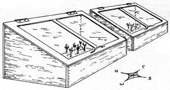 COLD FRAMES MADE FROM OLD BASEMENT WINDOWS |
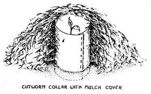 Sketch of a ptato plant |
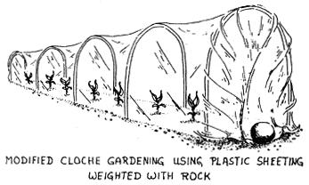 |
|
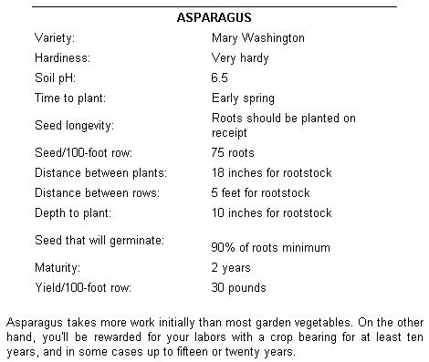 |
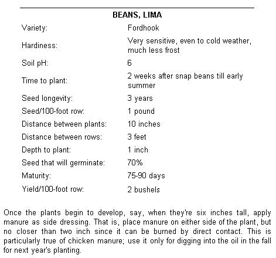 |
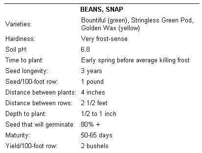 |
|
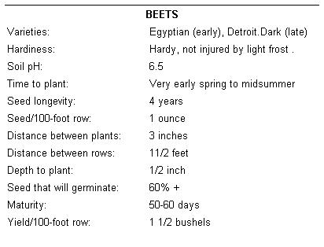 |
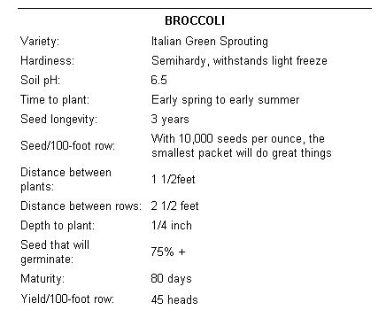 |
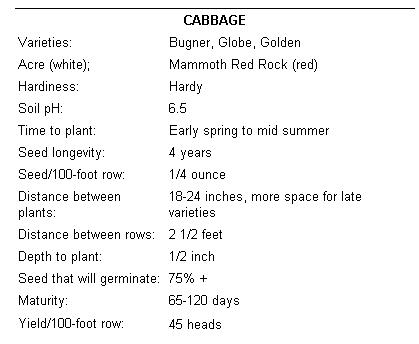 |
|
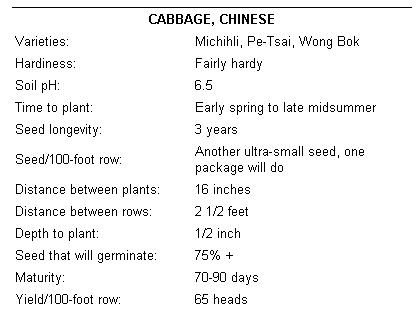 |
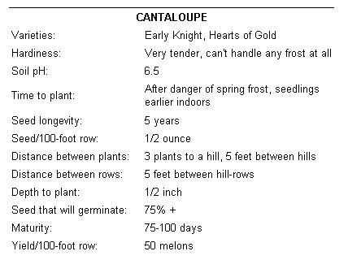 |
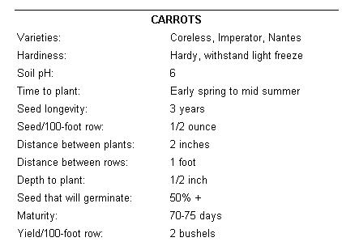 |
|
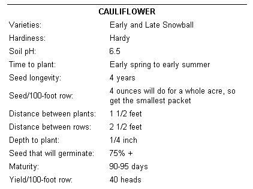 |
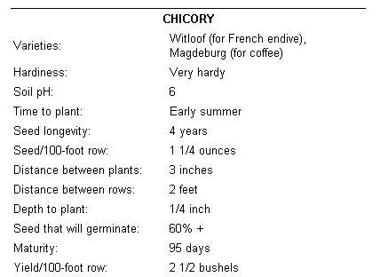 |
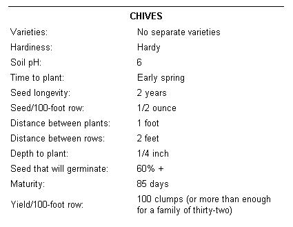 |
|
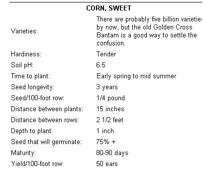 |
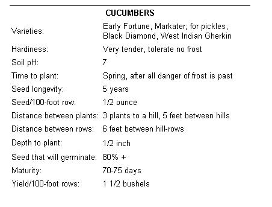 |
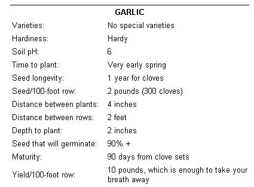 |
|
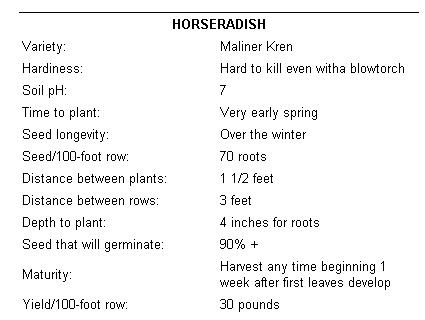 |
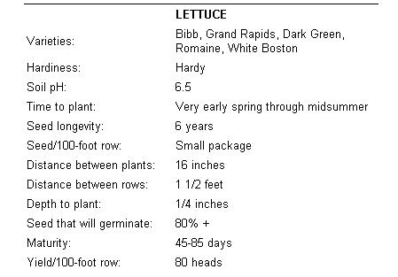 |
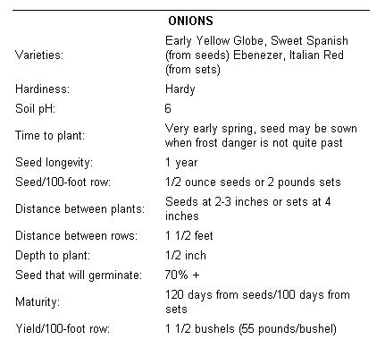 |
|
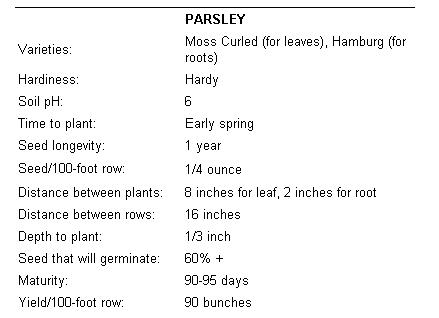 |
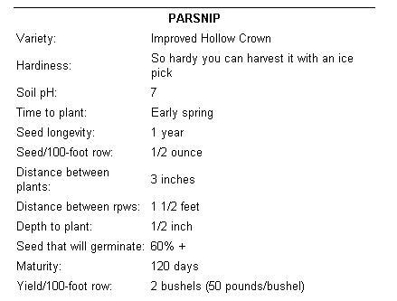 |
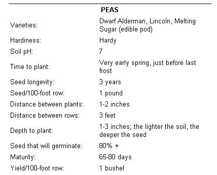 |